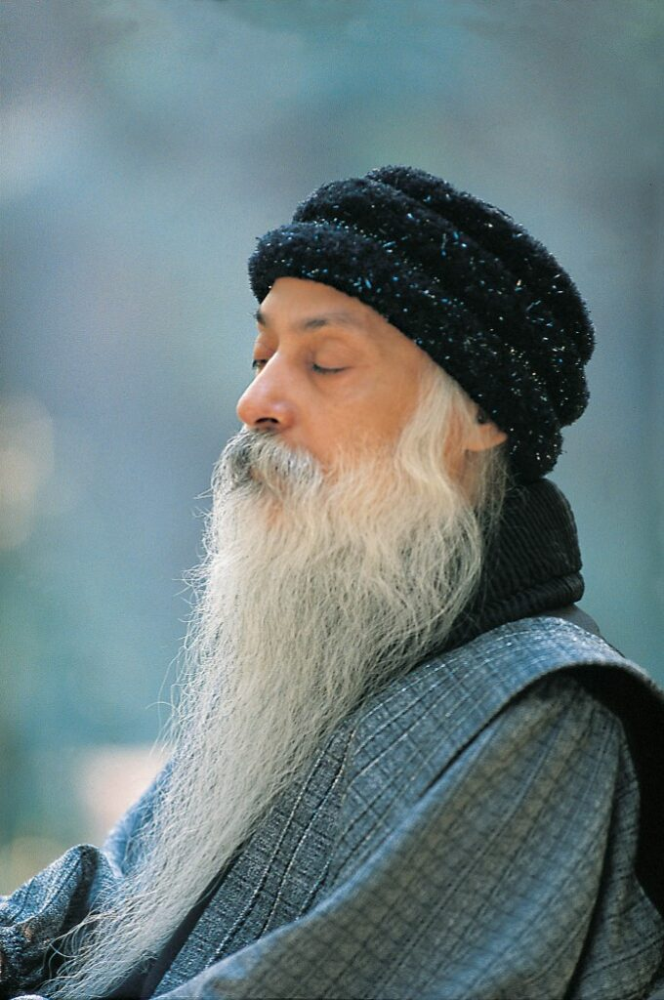
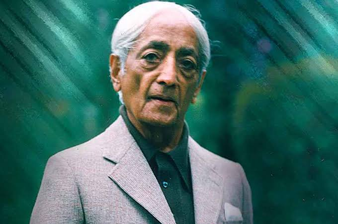
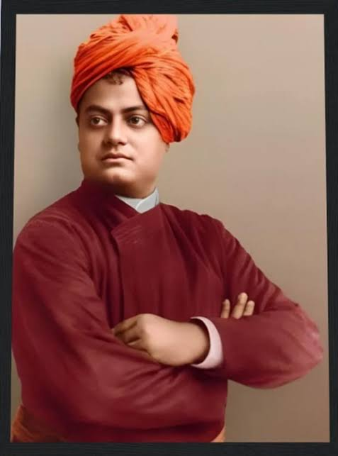

Meditation helps reduce stress, improve concentration, enhance emotional balance and create inner peace. By observing thoughts instead of fighting them, we become aware of our true self.

Creator of Dynamic Meditation. Osho believed modern people need active meditation before silence.

Meditation begins when thought ends. Observe without judgement.

Meditation is the path towards realizing the divinity within.
Observe every breath. Notice thoughts without attachment. Come back to the breath whenever distracted.
Fast breathing, catharsis, jumping, silence, celebration. Practice early morning.
Simply observe. No mantra. No control. No judgement. Just awareness.
Concentration Meditation Samadhi These lead towards self-realization.